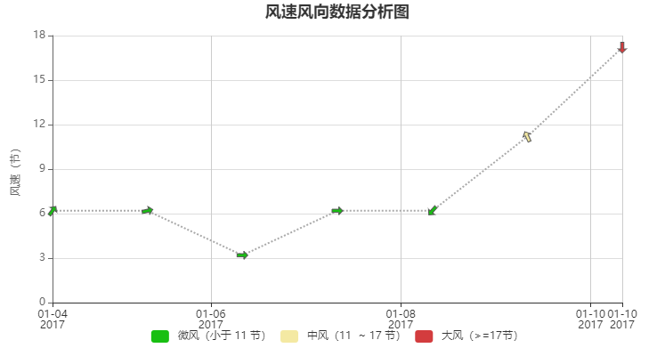

在 ECharts 的 GitHub 上下载最新的 release 版本，解压出来的文件夹里的 dist 目录里可以找到最新版本的 echarts 库。
像普通的 JavaScript 库一样用 script 标签引入。
1 <!DOCTYPE html>
2 <html>
3 <head>
4 <meta charset="utf-8">
5 <!-- 引入 ECharts 文件 -->
6 <script src="echarts.min.js"></script>
7 </head>
8 </html>1 <body>
2 <!-- 为 ECharts 准备一个具备大小（宽高）的 DOM -->
3 <div id="main" style="width: 600px;height:400px;"></div>
4 </body>然后就可以通过 echarts.init 方法初始化一个 echarts 实例并通过 setOption 方法生成一个简单的柱状图，下面是完整代码。
1 <!DOCTYPE html>
2 <html>
3 <head>
4 <meta charset="utf-8">
5 <title>ECharts</title>
6 <!-- 引入 echarts.js -->
7 <script src="echarts.min.js"></script>
8 </head>
9 <body>
10 <!-- 为ECharts准备一个具备大小（宽高）的Dom -->
11 <div id="main" style="width: 600px;height:400px;"></div>
12 <script type="text/javascript">
13 // 基于准备好的dom，初始化echarts实例
14 var data = [
15 [
16 1483488000000,
17 6.19,
18 0.9545
19 ],
20 [
21 1483574400000,
22 6.19,
23 0.2303
24 ],
25 [
26 1483660800000,
27 3.19,
28 0
29 ],
30 [
31 1483747200000,
32 6.19,
33 0
34 ],
35 [
36 1483833600000,
37 6.19,
38 4
39 ],
40 [
41 1483920000000,
42 11.19,
43 2
44 ],
45 [
46 1484006400000,
47 17.19,
48 4.7124
49 ]
50 ];
51 //数据参数顺序
52 var dims = {
53 time: 0,
54 windSpeed: 1,
55 R: 2
56 };
57 //箭头大小
58 var arrowSize = 12;
59 //方向绘制
60 function renderArrow(param, api) {
61 var point = api.coord([
62 api.value(dims.time),
63 api.value(dims.windSpeed)
64 ]);
65
66 return {
67 type: 'path',
68 shape: {
69 pathData: 'M31 16l-15-15v9h-26v12h26v9z',
70 x: -arrowSize / 2,
71 y: -arrowSize / 2,
72 width: arrowSize,
73 height: arrowSize
74 },
75 rotation: api.value(dims.R),
76 position: point,
77 style: api.style({
78 stroke: '#555',
79 lineWidth: 1
80 })
81 };
82 }
83
84 var option = {
85 title: {
86 text: '风速风向数据分析图',
87 left: 'center'
88 },
89 tooltip: {
90 trigger: 'axis',
91 formatter: function (params) {
92 return [
93 echarts.format.formatTime('yyyy-MM-dd', params[0].value[dims.time])
94 + ' ' + echarts.format.formatTime('hh:mm', params[0].value[dims.time]),
95 '风速：' + params[0].value[dims.windSpeed],
96 '风向：' + params[0].value[dims.R]
97 ].join('<br>');
98 }
99 },
100 grid: {
101 top: 40,
102 bottom: 60
103 },
104 xAxis: {
105 type: 'time'
106 },
107 yAxis: [{
108 name: '风速（节）',
109 nameLocation: 'middle',
110 nameGap: 35,
111 axisLine: {
112 lineStyle: {
113 color: '#666'
114 }
115 },
116 splitLine: {
117 lineStyle: {
118 color: '#ddd'
119 }
120 }
121 }, {
122 axisLine: { show: false },
123 axisTick: { show: false },
124 axisLabel: { show: false },
125 splitLine: { show: false }
126 }],
127 visualMap: {
128 type: 'piecewise',
129 orient: 'horizontal',
130 left: 'center',
131 bottom: 10,
132 pieces: [{
133 gte: 17,
134 color: '#D33C3E',
135 label: '大风（>=17节）'
136 }, {
137 gte: 11,
138 lt: 17,
139 color: '#f4e9a3',
140 label: '中风（11 ~ 17 节）'
141 }, {
142 lt: 11,
143 color: '#18BF12',
144 label: '微风（小于 11 节）'
145 }],
146 seriesIndex: 0,
147 dimension: 1
148 },
149 dataZoom: [{
150 type: 'inside',
151 xAxisIndex: 0,
152 minSpan: 5
153 }],
154 series: [{
155 type: 'custom',
156 renderItem: renderArrow,
157 encode: {
158 x: dims.time,
159 y: dims.windSpeed
160 },
161 data: data,
162 z: 10
163 }, {
164 type: 'line',
165 symbol: 'none',
166 encode: {
167 x: dims.time,
168 y: dims.windSpeed
169 },
170 lineStyle: {
171 normal: {
172 color: '#aaa',
173 type: 'dotted'
174 }
175 },
176 data: data,
177 z: 1
178 }]
179 };
180
181 myChart.setOption(option);
182
183 //窗口变化更改Chart大小
184 window.onresize(function () {
185 myChart.resize();
186 });
187 </script>
188 </body>
189 </html>运行测试图表如下:
